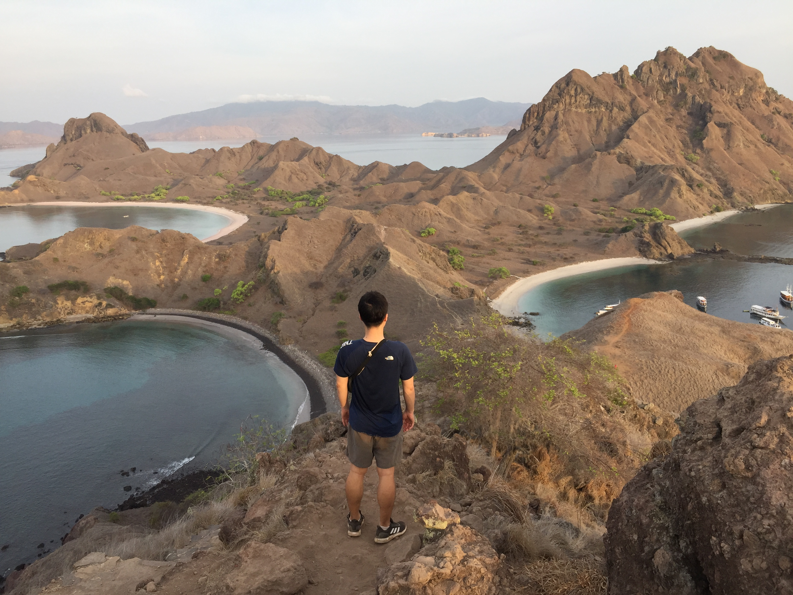

Flores (Indonesian: Pulau Flores) is one of the Lesser Sunda Islands, a group of islands in the eastern half of Indonesia. The population was 1,931,000 in the 2010 census and the largest town is Maumere. The name Flores is derived from the Portuguese for "flowers". Flores is located east of Sumbawa and Komodo islands and west of Lembata island and the Alor Archipelago. To the southeast is Timor. To the south, across the Sumba Strait, is Sumba island and to the north, beyond the Flores Sea, is Sulawesi. Among all islands containing Indonesian territory, Flores is the 10th most populous after Java, Sumatra, Borneo (Kalimantan), Sulawesi, New Guinea, Bali, Madura, Lombok, and Timor and also the 10th biggest island of Indonesia.
